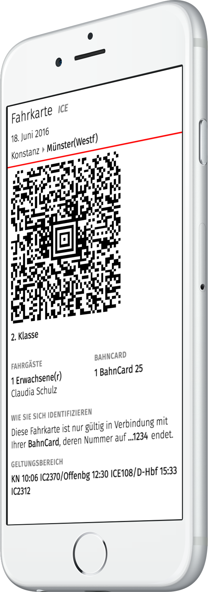

Kein Drucker für dein Online-Ticket?
Keine Lust, den DB Navigator herunterzuladen?
Leite deine DB-Buchungsbestätigung an bahn@fahrkar.de weiter und wir wandeln deine PDF-Fahrkarte in eine mobile Fahrkarte um, die du ganz ohne zusätzliche Apps auf deinem Telefon öffnen kannst.